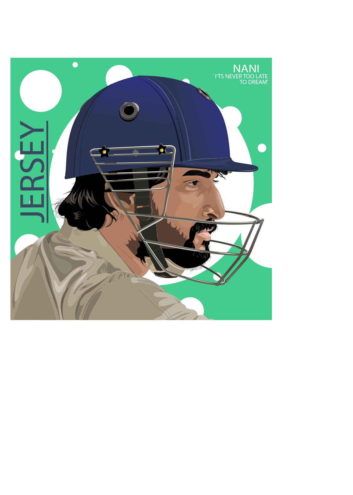

<!DOCTYPE html>
<html>
<head>
	<title>Image Slider</title>
	<link rel="stylesheet" type="text/css" href="https://cdnjs.cloudflare.com/ajax/libs/slick-carousel/1.8.1/slick.min.css"/>
	<link rel="stylesheet" type="text/css" href="https://cdnjs.cloudflare.com/ajax/libs/slick-carousel/1.8.1/slick-theme.min.css"/>
<link rel="stylesheet" href="https://cdnjs.cloudflare.com/ajax/libs/font-awesome/5.15.3/css/all.min.css" />

	<style type="text/css">
		.slider {
			width: 80%;
			margin: 0 auto;
			overflow: hidden;
		}
		.slider img {
			width: 100%;
			height: 400px;
			object-fit: contain;
		}
		.slider-nav {
			text-align: center;
		}
		.slider-nav button {
			font-size: 20px;
			color: #000;
			background-color: #fff;
			border: none;
			cursor: pointer;
		}
		.slider-nav button:focus {
			outline: none;
		}
		.slider-nav button:hover {
			background-color: #ddd;
		}
		.slider-nav button.prev {
			margin-right: 20px;
		}
	</style>
</head>
<body style="background-color: rgb(29, 89, 80);">
 
</body>

<h1 style="color: rgb(43, 155, 80); font-size: 50px; text-align: center;">My Illustrator Works</h1>


	<div class="slider">
		
		





	</div>


	<div class="slider-nav">
		<button class="prev"><i class="fa fa-chevron-left"></i></button>
		<button class="next"><i class="fa fa-chevron-right"></i></button>
	</div>

	<script type="text/javascript" src="https://code.jquery.com/jquery-3.6.0.min.js"></script>
	<script type="text/javascript" src="https://cdnjs.cloudflare.com/ajax/libs/slick-carousel/1.8.1/slick.min.js"></script>
	<script type="text/javascript">
		$(document).ready(function(){
			$('.slider').slick({
				arrows: false,
				dots: false,
				autoplay: true,
				autoplaySpeed: 2000,
				infinite: true,
				speed: 500,
				slidesToShow: 1,
				slidesToScroll: 1
			});

			$('.prev').click(function() {
				$('.slider').slick('slickPrev');
			});

			$('.next').click(function() {
				$('.slider').slick('slickNext');
			});
		});
	</script>

</body>
</html>


